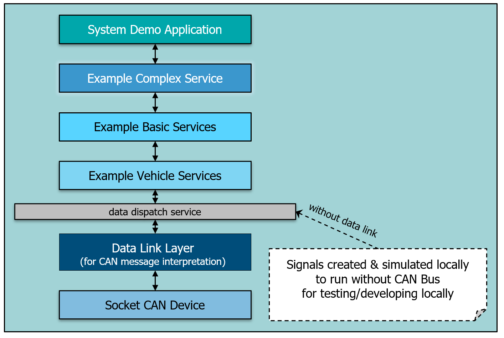

System Demonstration Example#
Attention
Purpose: Includes everything in combination, autogenerated code using sdv_dbc_util and sdv_vss_util, Complex Service offering own interface, running Standalone Application and Extern Application, contains a little bit more code combined while the other examples contain smaller code samples. It includes in 2 data resources: Data Link (can messages are read and send from a text file) and simulation by writing the data direct into dispatch service.
Note
<output-folder>/examples/bin:Sub pages of the system demonstration example
Hint
The example contains 2 signals from bottom to top and 2 signals from top to down:
Bottom to top: Vehicle speed and Steering Wheel.
(Test loop) Send Steering Wheel Angle from -16 to 16 radians and vice versa
(Test loop) Send speed from 0 to 12 m/s (43.2 km/h) and vice versa
Top to bottom: Rear Axle depending from Steering Wheel and Speed. Additionally, a simple counter.
Function (implemented as Complex Service): set rear axle with opposite sign of the steering wheel depending on the speed and steering wheel angle.
Calculate the counter steering percentage (counter proportional to the vehicle speed - the quicker, the less counter steering).
Complex service offers additional the Interface
ICounterSteeringServiceto activate or to deactivate the service.class CConsole: this class shows the signal values in
rdrespectivelym/sAdditional it shows the values from the Basic Service in
degrespectivelym/s. Typically such conversions will be done within a Vehicle Device or Basic Service depending on the standardization of the Interface s. In this example we do not touch the auto generated code for vehicle devices and basic services. So it’s done in the class CConsole to demonstrate the signals from the bottom may be converted to something else. The signal from the bottom must be converted to a general signal (unit & range) to abstract the signals from the vehicle underneath.
Hint
In case the data link component is included, the speed and steering wheel is read from the the CAN bus, the 2 other signals are written to the CAN bus. There is no real CAN bus, instead the can simulation component ‘can_com_sim’ is used. This component reads the CAN messages from the file ‘system_demo_receiver.asc’ and sends the CAN messages to the ‘can_dl_example.sdv’ component.
As described in Component stack. this example demonstrates how VAPI Signal s run through the complete stack.
Data Link Layer
The data link layer demonstrates the vehicle bus abstraction and is automatically generated using the DBC file describing the CAN bus layout.
The code is generated by using the sdv_dbc_util utility. Its purpose is the extraction and composition of signals from and to CAN messages.
Vehicle Devices
The interface to the data link is described in the DBC file and code is generated using the sdv_dbc_util utility. The standardized vehicle interface is described through
VSS (Vehicle Signal Specification) and the code is generated using the sdv_vss_util utility. The main purpose of vehicle devices is to provide a low-level translation
between the vehicle specific data from the vehicle bus and the standardized vehicle interface. Vehicle devices are closely coupled to the vehicle platform.
Basic Services
Basic services provide the lowest application layer by interfacing with the standardized vehicle interface and providing a standardized application interface. The interface to the vehicle is the same as is used by the vehicle devices and is described in VSS.
The interface code is automatically generated using the sdv_vss_util utility. The standardized application interface is also described using VSS and the Interface code is automatically generated.
The basic services combine vehicle data to provide a more application friendly interface. In the easiest case, it provides a one-to-one translation between the vehicle data from the vehicle device and the application interface. Basic services should be platform and vehicle independent.
Complex Services
Complex services provide a more complex processing of vehicle data to provide vehicle services that can be used to operate the vehicle. It can, but doesn’t have to have an interface towards applications. Multiple complex services can build on top of each other. in this system example, the provided complex service implementation uses the speed and the steering wheel to provide counter steering of the rear axle counter proportional to the speed with a limitation of 30 km/h. It is visible that the rear angle always has the opposite sign compared to the steering wheel. Used interfaces are compiled and code is generated using the sdv_idl_compiler.
Application
The application provides the highest-level user interface. For demonstration purposes it visualizes the data from the example basic services and example complex service as well as from the example vehicle device when running as developer standalone application - which allows all components to run within one process, which allows data analysis and debugging without having to deal with a multi- process application.
In case the system demo is started as a core instance how it will be done on a vehicle, the application connects itself to this core instance. As it is not running in the same process, it has not the possibility to access the data dispatch service or the interfaces of the vehicle devices. These interfaces are not published to the outside meaning the required proxy and stub binaries are not available. But the interfaces of basic services and complex service are accessible and the signal values are displayed.
The following shows the system:
